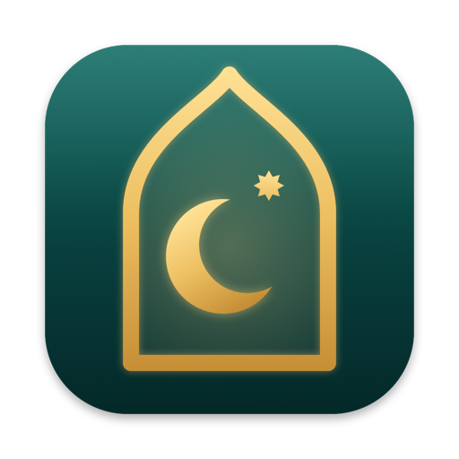
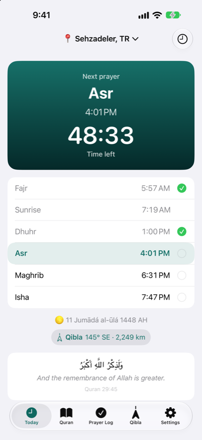
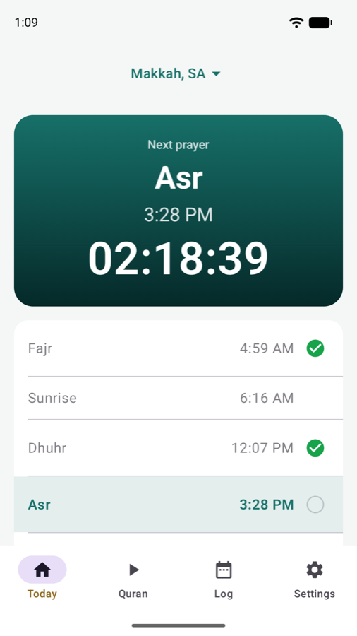
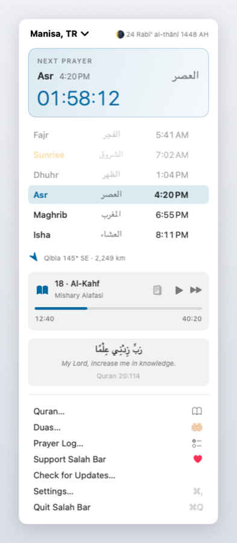
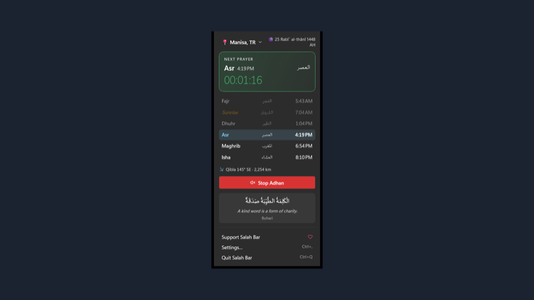

The next prayer, one glance away
Salah Bar is a free prayer-times app for Mac, iPhone, iPad, Apple Watch, Android, Wear OS and Windows. It shows a live countdown to the next prayer, plays the adhan when the time comes, reminds you before each prayer and lets you read and listen to the Quran.
Free. No ads. No account. No tracking. Prayer times are calculated on your own device, and work offline.
In the menu bar: the countdown, the adhan, the Quran from 242 reciters, widgets. macOS 14 or later.
Download for MacToday's times, the Lock Screen and Dynamic Island, the Mushaf, duas and the watch.
Coming to the App StoreThe full adhan on time with the screen off, widgets, a tile and complications on the watch.
Get it on Google PlayIn the notification area, with the adhan, reminders, the Quran and widgets. Windows 11.
Get it from the Microsoft Store



If you choose, Salah Bar can keep your settings, prayer log and Quran progress the same on all
your devices through your own Google Drive. Tap Sign in with Google in Salah Bar's sync
settings: Salah Bar asks Google for one permission only, to keep its own file in a hidden app
folder of your Drive (drive.appdata). It can't see any of your other files. The file
goes straight from your device to your Drive; Salah Bar has no server and the developer never sees
your data. You can sign out, or delete the file and Salah Bar's access, at any time.
What is stored, how it is used and how to delete it: Salah Bar's privacy policy.
Salah Bar has no accounts of its own, no analytics, no ads and no tracking, and the developer never receives your data. Your settings and prayer log stay on your devices. Features you turn on, such as the weather or nearby mosques, send what they need (a rounded location) to the service that answers. Read the privacy policy (in twelve languages).
Questions, ideas or a problem: open an issue on GitHub. If Salah Bar helps you, you can support Salah Bar.